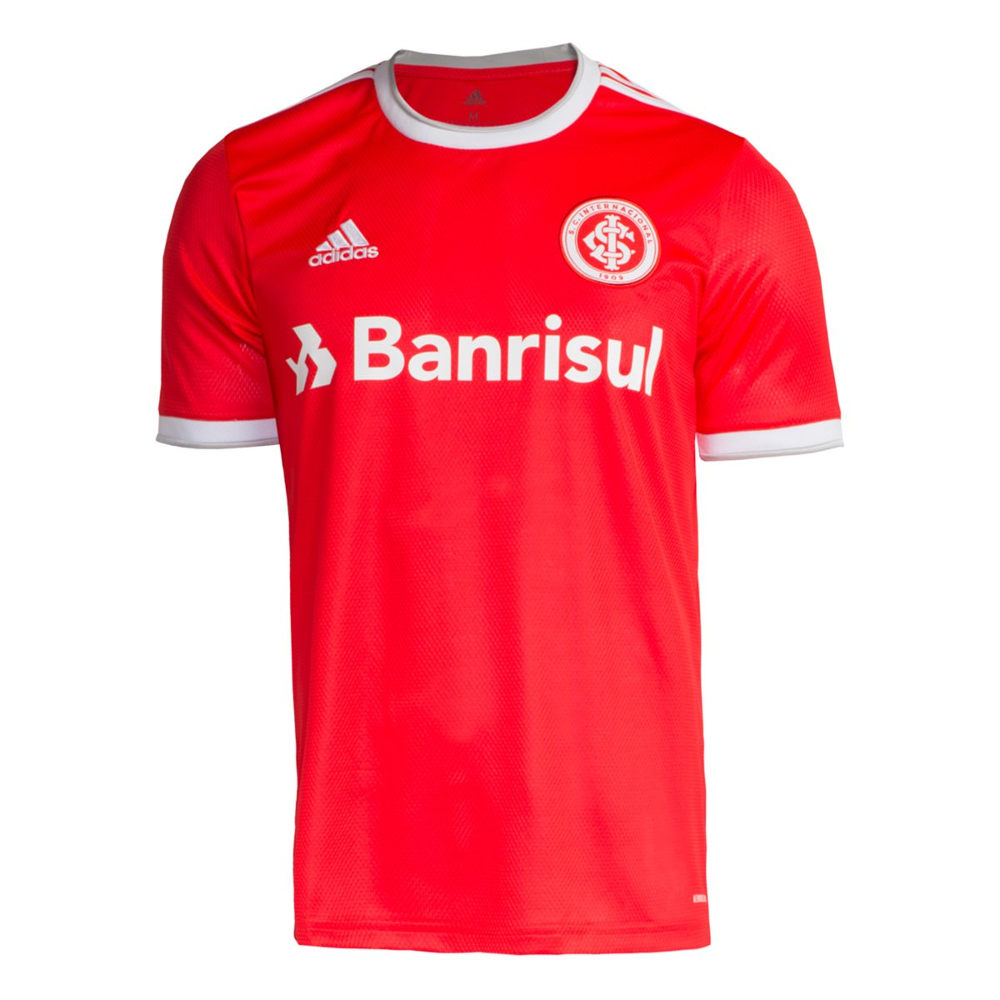

INTERNACIONAL

Sport Club Internacional (mais conhecido simplesmente como Internacional,
e popularmente pelos apelidos de Colorado e Inter de Porto Alegre)
é um clube multiesportivo brasileiro com sede na cidade de Porto Alegre, capital do Rio Grande do Sul.
Foi fundado em 4 de abril de 1909, pelos irmãos Poppe, com o objetivo de ser uma instituição
democrática e sem preconceitos.
Tem como suas cores o vermelho e o branco e seus torcedores são conhecidos como colorados.
No futebol, é um dos clubes mais vitoriosos do Brasil e das Américas, sendo o terceiro
maior campeão internacional do país, com sete conquistas oficiais, superado somente por Santos e São Paulo.
Suas maiores conquistas foram as do Mundial de Clubes da FIFA, em 2006, e
os dois títulos da Copa Libertadores da América, em 2006 e 2010, além de uma Copa Sul-Americana de
forma invicta, em 2008,
dois títulos da Recopa Sul-Americana, em 2007 e 2011, e uma Copa Suruga Bank.
Em relação às conquistas em nível nacional, o Internacional é detentor de três títulos do
Campeonato Brasileiro (1975, 1976 e 1979), sendo o terceiro de forma invicta,
além de uma Copa do Brasil e um Torneio Heleno Nunes.
É o primeiro clube da Região Sul a conquistar títulos nacionais e a disputar uma final de
Copa Libertadores. Além disso, manteve-se durante vinte e quatro anos seguidos (1975–1998)
na liderança no Ranking de Pontos do Campeonato Brasileiro, período em que disputou sete semifinais,
três fases finais e quatro finais da competição (1975, 1976, 1979 e 1988). O Internacional ainda
é o maior vencedor do Campeonato Gaúcho, tendo conquistado quarenta cinco vezes a competição, e detém o
recorde de maior número de conquistas consecutivas: oito vezes, entre 1969 e 1976.
Desde 1969, manda suas partidas de futebol no estádio Beira-Rio, de propriedade do clube,
com capacidade para mais de cinquenta mil torcedores. O local passou por uma ampla reforma
entre 2010 e 2014 para poder sediar partidas da Copa do Mundo de 2014. Além disso,
o clube é dono do Ginásio Gigantinho e do Centro de Treinamentos Parque Gigante. O time feminino,
por sua vez, joga na sede campestre do SESC, em Porto Alegre, desde 2020.
O Internacional é um dos clubes de futebol mais populares do Brasil, com uma torcida estimada
em 6,4 milhões de torcedores espalhados pelo país. É o clube pioneiro do país no
programa sócio-torcedor, lançado em 2003. Em 2020, contava com mais de cento e
vinte mil associados. No mesmo ano, foi considerado o quinto mais valioso do futebol brasileiro,
avaliado em 1,749 bilhão de reais em estudo da empresa Sports Value. Contudo, o
clube atingiu o maior déficit anual da história ao fechar 2020 com noventa milhões de reais de
prejuízo e vem registrando resultados financeiros negativos desde 2016. O seu presidente
atual é Alessandro Barcellos, que assumiu o mandato no início de 2021.
Além do futebol masculino, o Internacional também já manteve ou mantém outras modalidades
esportivas coletivas e individuais,
como:
- futebol feminino
- atletismo
- e-sports
- basquete
- boxe
- taekwondo
- voleibol
- futebol de salão
Nesta última, conquistou a Liga Futsal de 1996, a Copa Libertadores de Futsal de 2000,
a Copa Intercontinental de Futsal de 1996 e oito títulos estaduais. No futebol feminino,
é o maior vencedor do Campeonato Gaúcho, com dez títulos, sendo o mais recente em 2020.
Entre ídolos e atletas de destaque do clube estão:

- Larry Pinto de Faria
- Bodinho
- Paulo Roberto Falcão
- Elias Figueroa
- Valdomiro
- Claudiomiro
- Manga
- Caçapava
- Fernandão (homenageado pelo clube com uma estátua)
- Andrés D'Alessandro